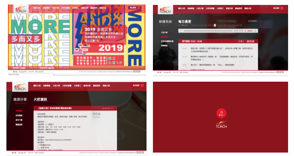
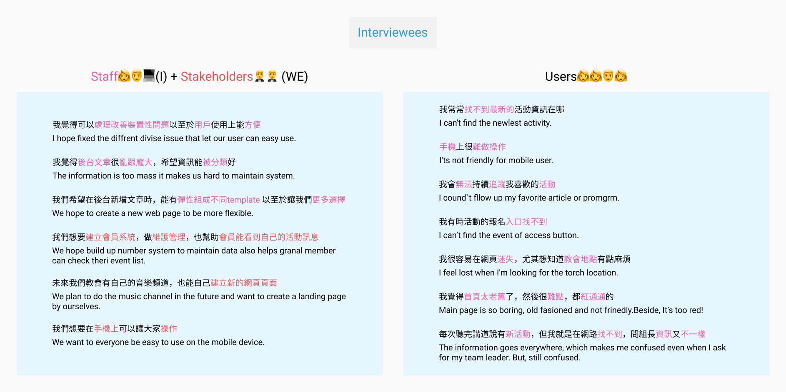
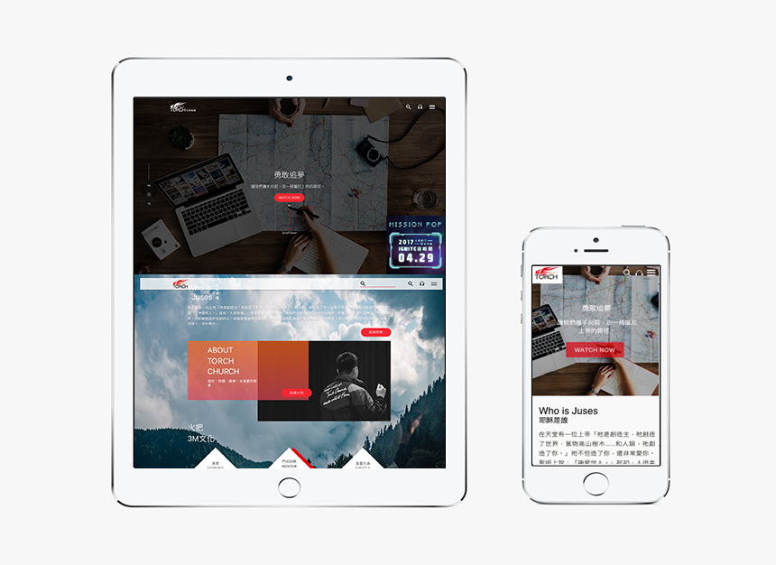
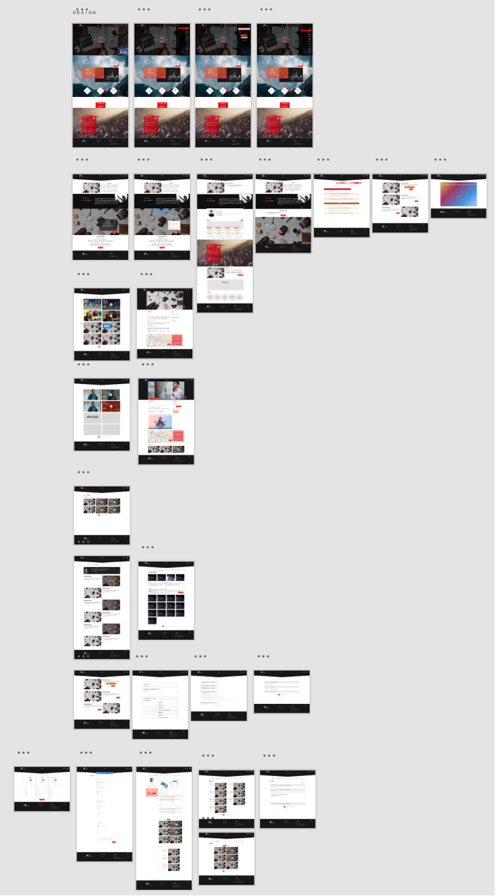
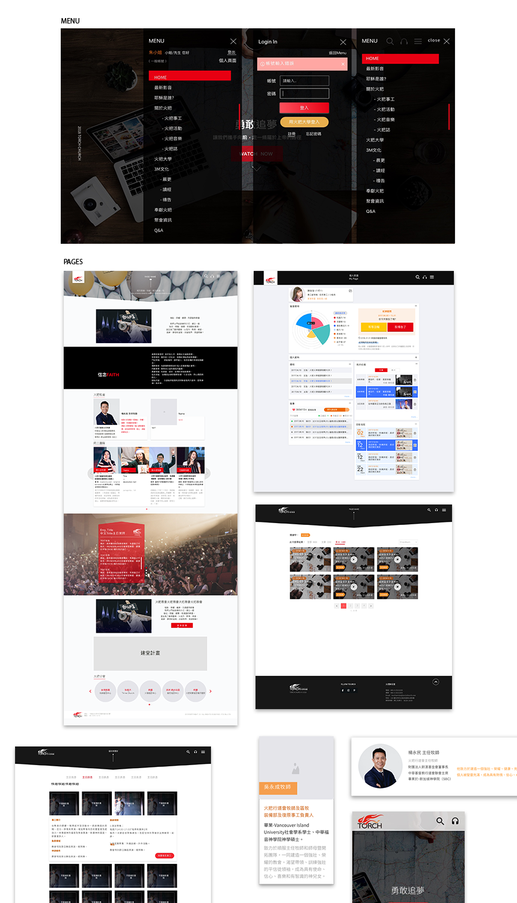

The Torch Church original website hasn`t been updated for decades, and their folk has increased fastly from 200 to nearly 2,000. And the website needs to be refreshed again. In addition, a volume of activities needs to be published on the website.
I held and directed the brainstorming to collect different issues, which understood staff and users what issue their facing. I am responsible for information structure and based on the content management system (CMS) as my design tool. Beside, UI duty as well.
We were all concerned that web structure was a big problem when we discussed it. It caused users are not quickly gain infomaiton. But we still want to dig more deeply. I held about the interview. Total:7 person. Company: 4 person (Inculding 2 stakholders) Granal member: 4 person.Goal : Analyse the users’ insights to find out the pain points and cllected function features.
To build web products rapidly, I initally thought about building a design system; however, the design system can curb the diversity and creativity of design works. Also, rebuilding Information Architecture that though by CMS (content manage system).
According to the official website article contains all the articles published by social media, I have defined several categories, 1.static articles, Video pages, Events, general information.
I defined the structure by (1) created new design libraries(2) thinking about how engineers and I coded websites (3) Creating new modules by a grid system so that fixed the RWD issue.


